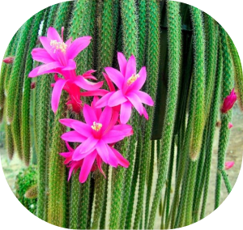
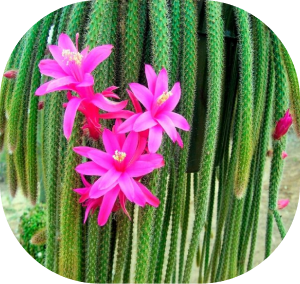

Апорокактус
Такое эпифитное растение имеет прямое отношение к семейству кактусовых. Предпочитает расти на скалистых склонах, при этом своими побегами оно цепляется за ветки деревьев и кустарников, и за каменистые выступы. Зачастую можно повстречать свисающие могучие заросли.
Внешний вид:
У данного растения имеется длинный стебель, который в длину вырастает до 100 сантиметров, а его диаметр равен 1,5–3 сантиметрам и он
является сильно разветвленным. На его поверхности можно разглядеть тоненькие плохо видимые ребра, на которых располагаются коротенькие
колючки похожие на щетинки. Молоденькие кактусы отличаются тем, что их стебель растет вверх, после этого он спускается вниз в виде
петлей. Блестящие плети насыщенного зеленого окраса, со временем меняют свой цвет на зелено-серый.
Трубчатые цветочки окрашены в малиновый либо розовый цвет и в длину достигают 10 сантиметров. Плод представлен в виде ягодки круглой
формы и красного цвета. На его поверхности находится слой из щетинок.
Освещенность:
Нуждается в ярком освещении, но при этом негативно реагирует на попадание прямых лучей солнца. Рекомендуется размещать около окон западной либо восточной ориентации. Если поставить его на южное окно, то тогда в полуденные часы надо будет обязательно притенять растение от палящих лучей солнца. В зимнее время апорокактус также должен получать достаточно много света, так как именно это оказывает прямое влияние на образование бутонов, а также на обильность цветения.
Температурный режим:
Весной и летом кактус хорошо себя чувствует в тепле (от 20 до 25 градусов). В это время его можно перенести на улицу, но при этом для его размещения следует выбрать место притененное от прямых лучей солнца. В зимнее время его переставляют в прохладную (от 7 до 10 градусов) и светлую комнату.
Влажность воздуха:
Ему не нужна высокая влажность воздуха, однако в летний период кактус рекомендуется опрыскивать тепловатой водой. В зимнее время, особенно при холодной зимовке, опрыскивание проводить нельзя.
Полив:
В весенне-летний период полив должен быть обильным, но допускать застоя воды в почве категорически нельзя. Почва все время должна быть слегка влажноватой. Спустя некоторое время после полива из поддона обязательно следует удалять стекшую жидкость. В зимнее время полив надо сократить (тем более при холодной зимовке). Поливать нужно только тогда, когда почва просохнет полностью.
Пересадка:
Молоденькие растения подвергают пересадке 1 раз в год, а взрослые ― 1 раз в 2 либо 3 года. Горшки должны быть низкие и довольно широкие, так как корни располагаются близко к поверхности почвы. Не забудьте про хороший дренажный слой.


 
